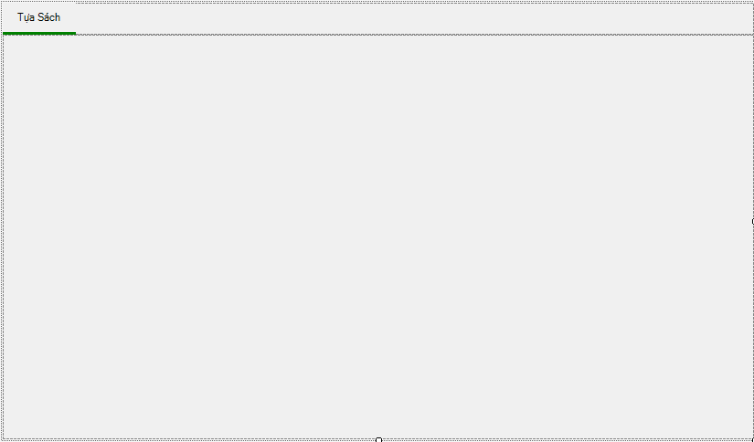
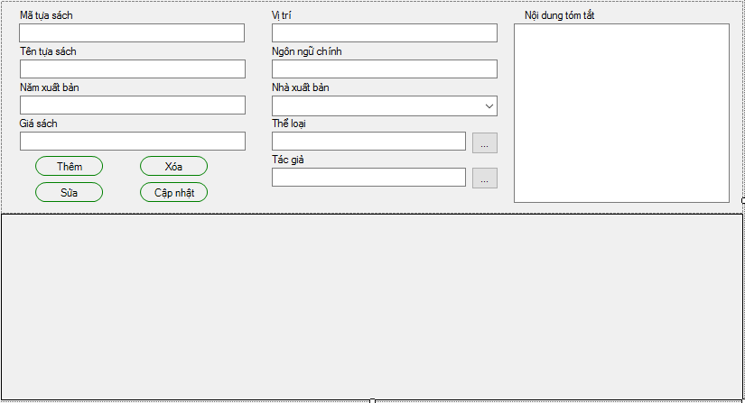
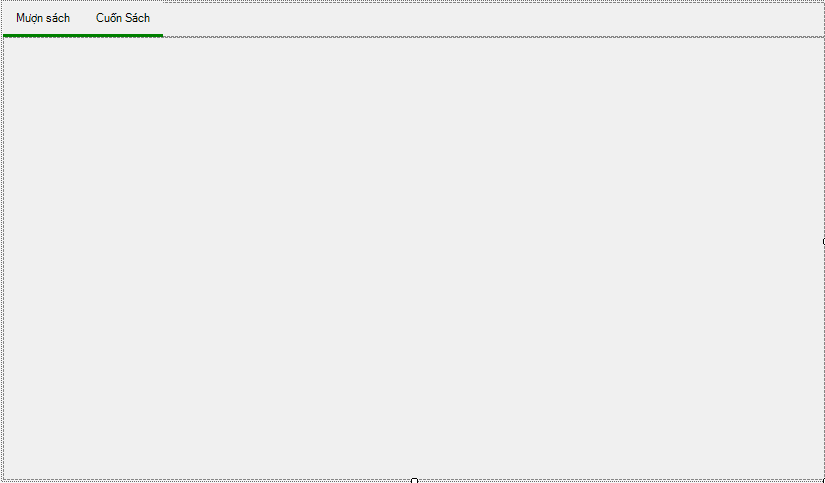
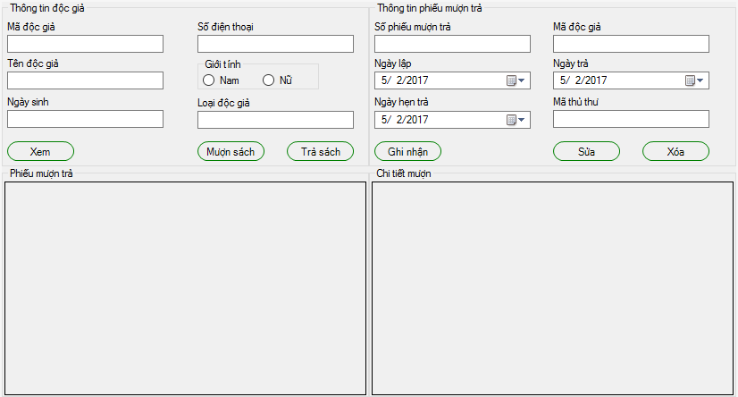
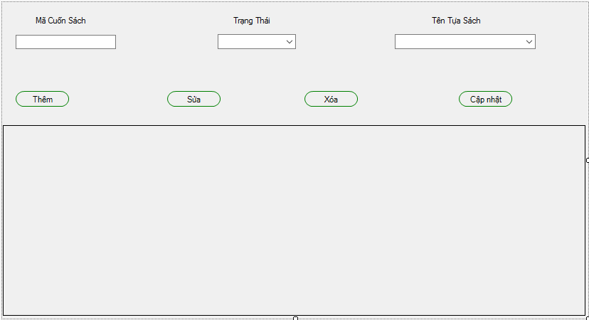
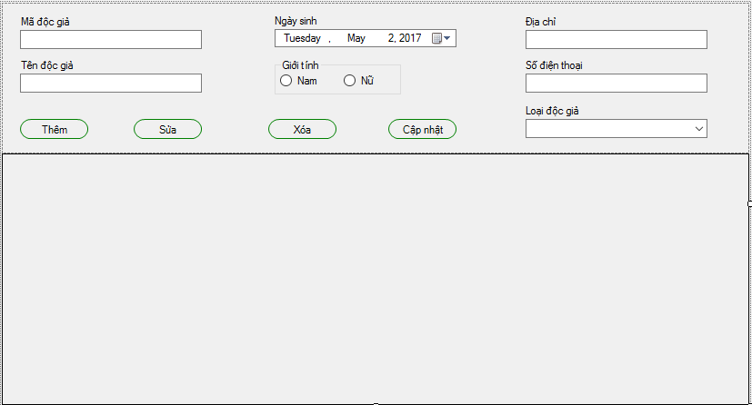
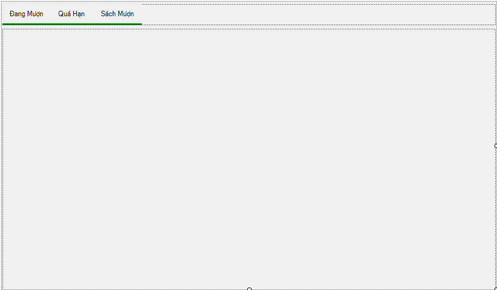
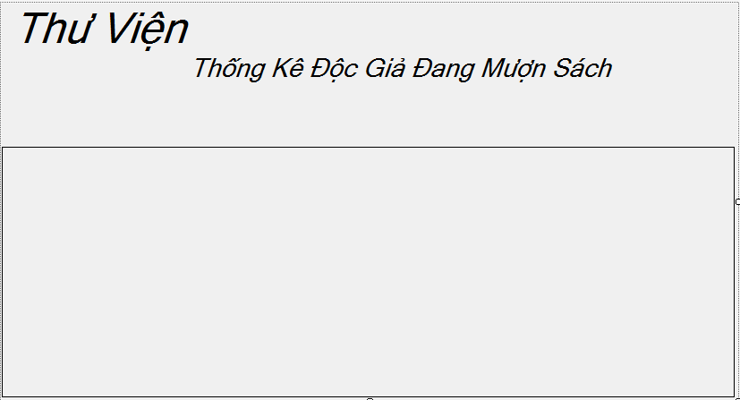
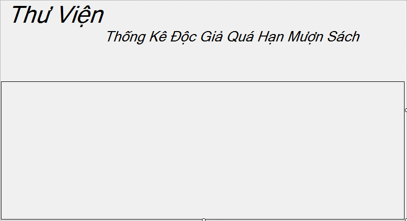

1.Đăng nhập.
Đầu tiên,các bạn phải đăng nhập bằng tài khoản đã được cấp phát.

2.Menu chính
Sau khi đăng nhập thành công,màn hình sẽ xuất hiện 1 form menu như hình.

Nhìn vào form,ta thấy có 5 chức năng chính,đó là :Tìm kiếm,Quản lý sách,Mượn trả sách,Quản lý nghiệp vụ và Thống kê.Các bạn có thể ấn vào các mục mà mình muốn.
3.Tìm kiếm
Khi bạn ấn vào mục tìm kiếm,các bạn có thể tìm kiếm theo tên thể loại hoặc tìm kiếm theo tên sách

4.Quản lý sách
Khi bạn ấn vào mục quản lý sách,các bạn có thể xem các tựa sách mà mình muốn xem
Sau khi ấn vào tựa sách,Các bạn có thể xem thông tin của tựa sách đó:
5.Mượn trả sách
Khi bạn ấn vào mục Mượn trả sách,các bạn có thể mượn sách hoặc xem trong thư viện có những cuốn sách nào.
Sau khi bạn ấn vào mục mượn trả,phiếu mượn trả xẽ hiện ra.Ở đây,phiếu mượn trả chia ra làm 2 phần,1 phần để hiện thông tin của độc giả và 1 phần hiện thông tin phiếu mượn trả.
Sau khi bạn ấn vào mục cuốn sách,sẽ hiện lên danh sách cuốn sách mà trong thư viện có.
6.Quản lý nghiệp vụ
Khi bạn ấn vào mục quản lý nghiệp vụ,các bạn có thể xem thông tin độc giả
Sau khi bạn ấn vào mục độc giả,thông tin của độc giả sẽ hiện ra,ở đây,các bạn có thể cập nhật lại thông tin của độc giả
7.Thống kê
Khi các bạn ấn vào mục thống kê,các bạn có thể thống kê sách đang mượn,thống kê sách quá hạn hoặc thống kê Sách Mượn
Sau khi ấn vào mục Đang mượn,các bạn có thể xem những độc giả đang mượn những cuốn sách nào.
Khi bạn ấn vào mục Qúa hạn,các bạn có thể xem những đọc giả nào đang quá hạn mượn sách.
Khi bạn ấn vào mục Sách mượn